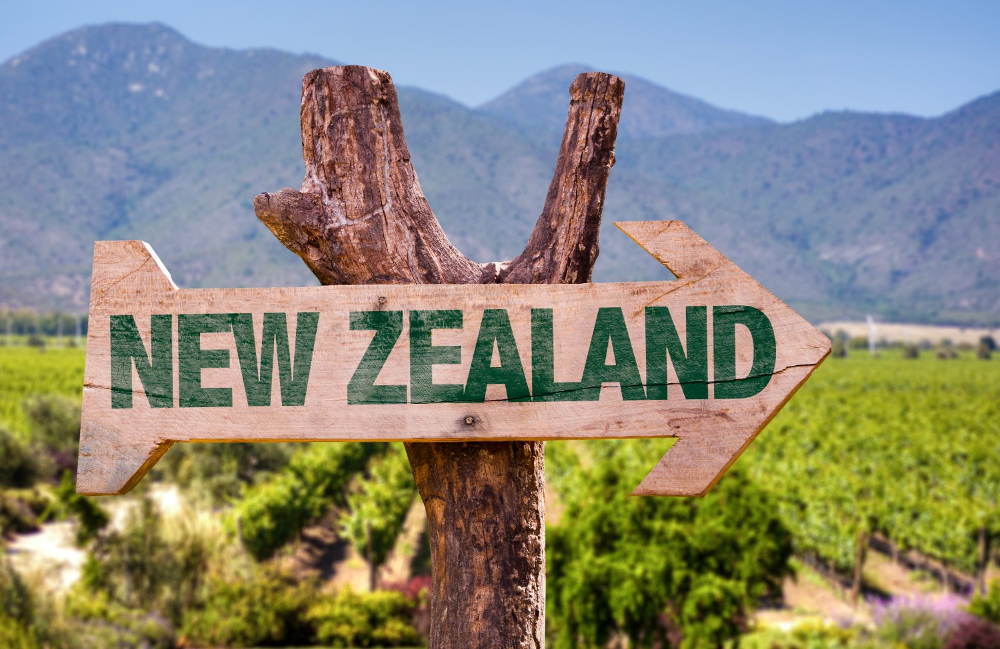
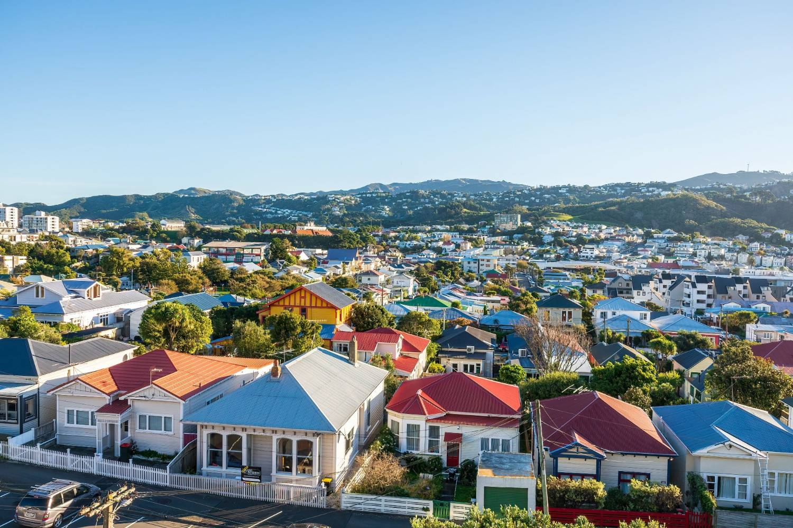
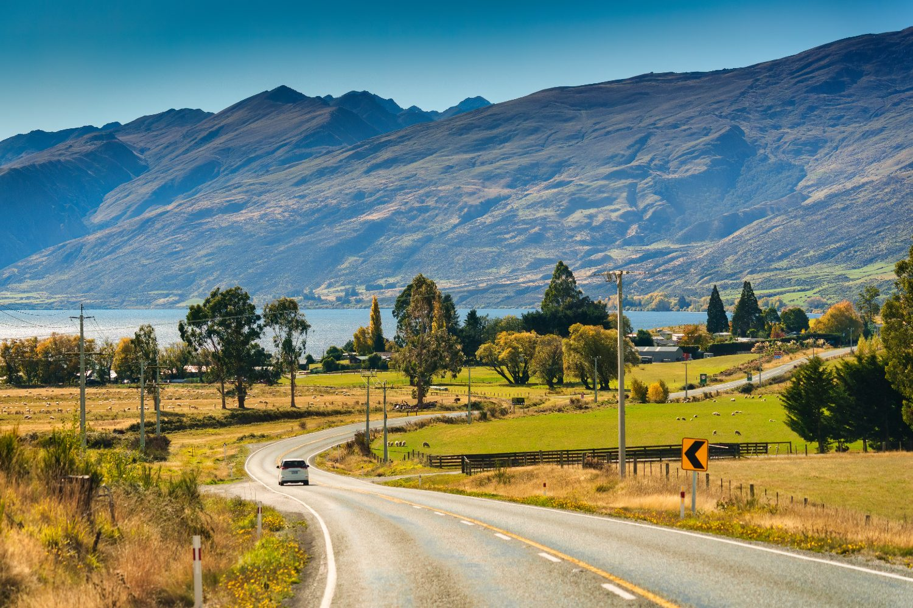
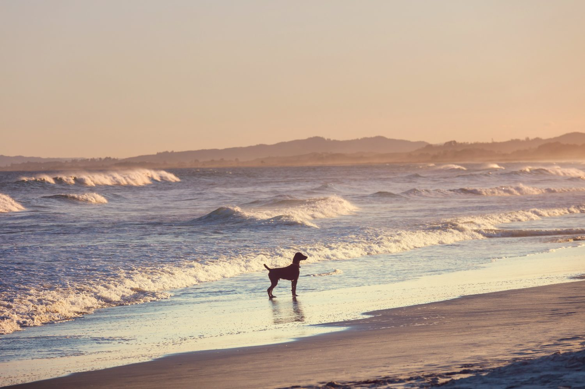
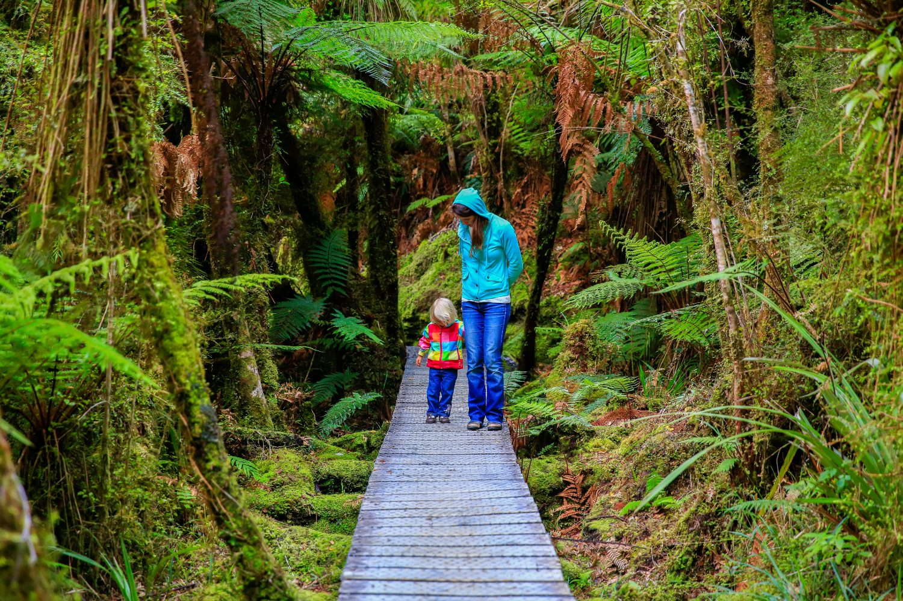
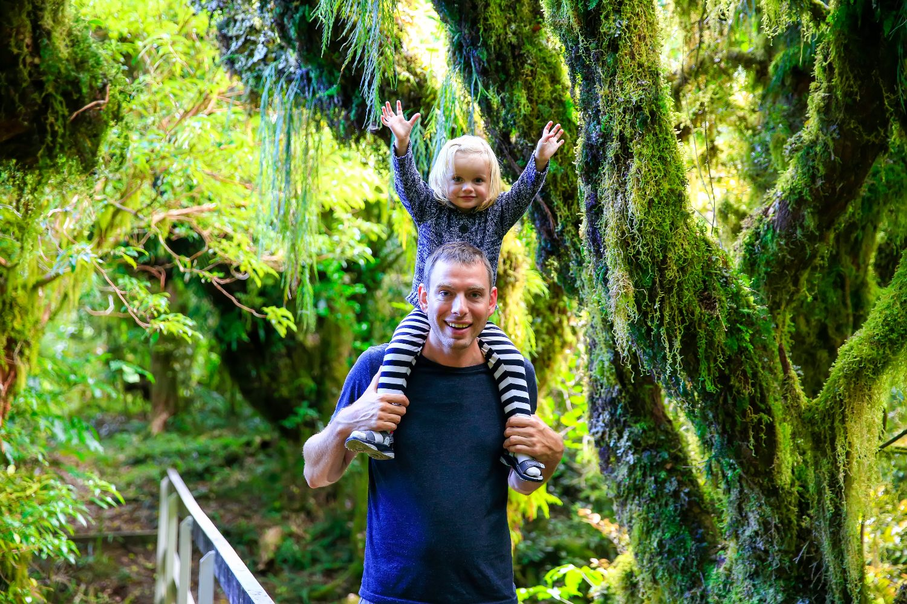
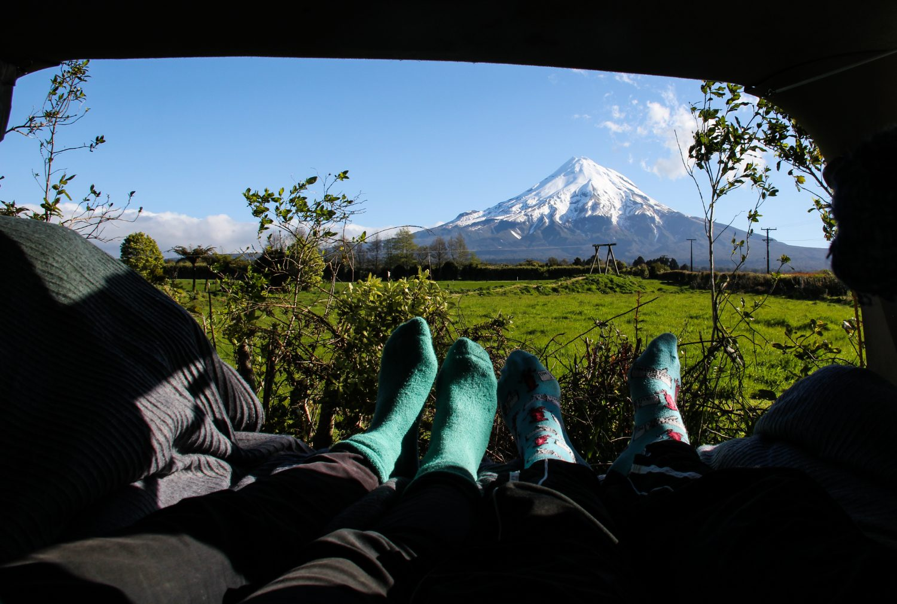
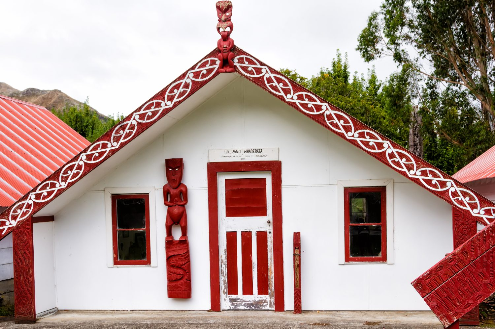

What’s inside
Twelve chapters in five parts. Everything here is national — true wherever in New Zealand you land — so it is written once and every city guide links to it rather than repeating it.
Local hospitals, suburbs, commutes, rents and weekends live in the destination guides. Auckland is complete with 24 chapters; the rest of the country follows.
Two islands at the edge of the world
A country of extraordinary landscapes — from the towering Southern Alps to tranquil fiords, geothermal marvels and pristine coastlines.

New Zealand sits in the south-western Pacific, around 1,900 km south-east of Australia. Its geography has sculpted a playground for outdoor enthusiasts and a haven for those who appreciate nature’s splendour.
Whether you’re drawn to snow-capped mountains or pristine coastlines, every corner of the country is a visual masterpiece. This diversity is mirrored in a climate that shifts from the subtropical north to the alpine south.
- Subtropical — Northland & Auckland: warm, humid summers, mild winters
- Temperate — most of the North Island: warm dry summers, cooler wet winters
- Continental — Canterbury & Otago: hot dry summers, cold frosty winters
- Alpine — the Southern Alps: cold year-round with heavy winter snowfall
A temperate, four-season year
The average temperature decreases as you travel south. January and February are the warmest months; July is the coldest.
A culture worth understanding
New Zealanders — Kiwis — are known for being warm, direct and easy-going, with a deep love of the outdoors and a genuine respect for work-life balance. You’ll feel welcomed quickly, and family life is given real room to breathe.
Aotearoa weaves together Māori heritage and influences from across Europe, the Pacific and Asia. Te reo Māori, tikanga (customs) and manaakitanga (care for others) are woven through everyday life — not a museum piece, but a living part of how the country works.
- Te Tiriti o Waitangi (1840) — the founding agreement between the Crown and Māori, widely understood today as the document that guides the partnership between government and Māori. You’ll hear it referenced often.
- The Tiaki Promise — a shared commitment to care for New Zealand’s land, sea and culture. "Tiaki" means to care for; the idea is simple — treat the place, and its people, with respect.
- Three official languages — English, te reo Māori and New Zealand Sign Language.
- Stable & progressive — a parliamentary democracy with a strong culture of human rights, environmental care and dependable public services.
Ten small things that make New Zealand, New Zealand
A few of the quirks and claims to fame you’ll pick up not long after you arrive.
Your move, step by step
From visas and shipping to helping your children — and pets — feel at home in Aotearoa.

Helping little ones feel at home
With its high standard of education, low crime rates, clean air and focus on outdoor living, New Zealand ticks every box for raising a family.
- Communicate early — have open, age-appropriate conversations
- Listen & validate their emotions, excitement and anxiety
- Pack together — let them bring sentimental items
- Maintain routine for stability during change
The financial essentials
A handful of early tasks will get your finances running smoothly. Most can be started before you arrive and completed in your first few weeks.
Opening a bank account
The major banks are ANZ, ASB, BNZ, Kiwibank and Westpac. You can usually start the process online before you arrive and activate the account in person once here. You’ll typically need your passport, work or resident visa, and proof of a New Zealand address. Ask for online banking and a debit card at the same time.
Your IRD number & getting paid
Every worker needs an IRD number from Inland Revenue. Apply online once you have a NZ address and bank account; processing usually takes around 7–10 working days. Give the number to your payroll team as soon as it arrives so the correct PAYE tax code is applied. Wages are commonly paid fortnightly into your NZ account.
KiwiSaver & sending money home
KiwiSaver is a government-supported retirement scheme. On a work visa you can usually opt in or out; contributions are a set percentage of your pay (commonly 3%, 4%, 6%, 8% or 10%), with employers contributing at least 3%. Funds can be withdrawn if you permanently leave New Zealand.
Sending money overseas: banks can transfer internationally, but specialist services such as Wise or OFX are often cheaper and faster. Always compare the exchange rate and fees before moving larger amounts.
Apply for your IRD number as soon as you arrive — almost everything else in your financial setup depends on it.
Tax, ACC & insurance
Income tax is deducted automatically through PAYE, so for most people there’s nothing to file. You’re taxed on income from New Zealand and overseas once you’re a tax resident — Inland Revenue (IRD) has clear calculators if you want to check where you’ll sit.
ACC — the Accident Compensation Corporation — gives everyone in New Zealand no-fault cover for injuries, whether they happen at work, at home or on the ski field. It’s funded through levies and government, and applies to residents and visitors alike.
- Insurance — ACC covers injury, but not illness or your belongings. Many newcomers take out health, contents and life cover; Immigration New Zealand publishes a migrants’ guide to what’s worth considering.
- KiwiSaver — you become eligible once you’re a resident, and it’s one of the simplest ways to build long-term savings.
Work for a partner or family member
If a partner is job-hunting, New Zealand has a healthy market and a few trusted places to start.
Finding your place
Housing ranges from city apartments to suburban homes and beachside properties. Costs vary widely by region — generally far more affordable outside Auckland and Wellington.

Grocery prices are consistent nationwide, with abundant fresh local produce. The lower cost of living in regional centres — paired with the country’s natural and cultural offerings — makes them especially appealing for families.
Driving is on the left, and a network of well-maintained highways connects the country. Public transport is strongest in the main cities; in smaller towns a car is recommended. Utilities are straightforward to set up once you have an address.
What you’ll pay to rent
Rents vary widely by region and property type. These are indicative weekly ranges to help you budget — always check current listings for your area.
| Where you settle | Flatshare | 1-bed | 3-bed house |
|---|---|---|---|
| Major city (e.g. Auckland) | $200–400 | $400–700 | $600–1,200 |
| Smaller city | $150–300 | $250–450 | $400–800 |
| Town | $100–250 | $200–400 | $300–600 |
| Village / rural | $80–200 | $150–350 | $200–500 |
Indicative weekly rent in NZD. Most rentals are unfurnished; a bond of up to four weeks’ rent is lodged with Tenancy Services and returned when you leave.
The cost of everyday life
Weekends worth looking forward to
- The outdoors — hiking and tramping (the Great Walks are world-famous), skiing in the Southern Alps, mountain biking, kayaking and surf beaches.
- Wildlife & wide skies — whale watching at Kaikōura, some of the Southern Hemisphere’s best stargazing, and native birdlife found nowhere else.
- Food, wine & culture — Marlborough and Central Otago wine regions, a strong café culture, festivals, and a sporting life built around rugby, cricket and netball.
Faith & community
New Zealand is religiously diverse and tolerant. Churches of many denominations sit alongside mosques, temples, gurdwaras and synagogues in the main centres, and there’s an easy acceptance of those who follow no faith at all.
Go deeperLiving & thriving in New Zealand→Getting on the road
New Zealanders drive on the left. Many new arrivals can drive on their overseas licence for a period before converting to a NZ one.

- Roads can be narrow, winding and rural — journey times are often longer than the distance suggests
- Always carry your licence; overseas licences must be in English or carry an official translation
- The AA offers roadside assistance, licensing help and vehicle inspections nationwide
- Drink-driving limits are strict and enforced — plan ahead on nights out
Relocating with cats & dogs
New Zealand has strict biosecurity rules to protect its unique environment, so bringing a pet takes planning — start early, ideally several months ahead.

Cats and dogs can be imported from approved countries under an import health standard, which sets out vaccinations, treatments, testing and documentation. Depending on where you’re travelling from, a period of quarantine on arrival may be required.
Many people use a specialist pet-relocation agent to manage the paperwork, flights and quarantine booking. Requirements vary by country of origin and species, so always check the current rules with the Ministry for Primary Industries before booking anything.
- Begin the process several months before you move — some steps have fixed waiting periods
- Confirm your pet’s breed is permitted (some dog breeds are restricted in NZ)
- Budget for vet work, flights, import documentation and any quarantine fees
- Keep every certificate and test result — biosecurity checks are thorough
Health, schooling and family life
New Zealand combines a strong public health system with a well-regarded education sector — both central to its appeal for relocating families.

Healthcare. Public healthcare is funded through general taxation, and ACC covers accidents on a no-fault basis. Many residents also choose private cover for elective procedures and shorter waiting times.
Education. Schooling runs from early childhood through to tertiary, with many schools weaving Māori culture and language into the curriculum. Small class sizes and strong community ties are common strengths.
The school year at a glance
School runs across four terms, with a long summer break over December and January. Exact dates shift slightly each year.
Finding your feet & your people
The practical setup matters, but so does building a life. New Zealanders are known for being friendly and welcoming — here’s how to settle in quickly.


Your first-month checklist
Building a social life
Sports clubs, community groups, and local Facebook and Meetup groups are some of the easiest ways to meet people. Many workplaces have social clubs and after-work catch-ups too. Volunteering, weekend markets and community events are great ways to feel part of a place quickly.
- Power & gas — compare providers on Powerswitch (powerswitch.org.nz)
- Mobile & broadband — Spark, One NZ, 2degrees and Skinny cover most needs
- Rubbish & recycling — collection is run by your local council; check bin colours and days
- Post & couriers — NZ Post, plus CourierPost and Aramex for parcels
Before you leave home
A simple list to work through in the weeks before you fly. Tick each item off as you go.
Documents
- Passport and valid NZ work or resident visa (printed copy too)
- Your job offer and employment contract
- Qualifications and professional certificates
- References and employment history
- Digital and printed copies of everything important
Money & admin
- Apply online for a NZ bank account before you travel
- Bring proof of ID and address to verify the account in person
- Have your documents ready to apply for an IRD number on arrival
- Arrange international money transfer for your initial funds
Travel & the move
- Confirm your airline baggage allowance and pre-purchase extra if needed
- Book temporary accommodation for your first weeks
- Get quotes from removal companies if shipping belongings
- Pack essentials, documents and valuables in your carry-on
Key numbers to know
In any emergency — police, fire or ambulance — dial 111. Save these before you arrive.
Useful national services
A quick language guide
Te reo Māori is woven through everyday New Zealand life, and Kiwis have their own slang too. A few phrases go a long way.

Everyday te reo Māori
Kiwi slang you’ll hear
Saying it right
- Vowels are pure and consistent: a = "ah", e = "eh", i = "ee", o = "aw", u = "oo" — every time.
- "Wh" sounds like "f" — so whānau is "fah-now".
- "R" is lightly rolled, closer to a soft "d" than an English r.
- Macrons (ā ē ī ō ū) simply lengthen the vowel — Māori is "Maa-ori".
- Place names reward a go: Taupō is "Toe-paw", Whangārei is "Fong-ah-ray". Locals value the effort far more than perfection.
Explore the destinations
Official tourism and council sites for the regions Ethicare covers — the best places to picture daily life, things to do and local services.

Work out your cost of living
Costs vary by city and lifestyle. These tools help you estimate what life in New Zealand would really cost for you and your family.
Official planning resources
For visas, tax and settlement, these government sources are the most current — details change, so always confirm here.
From this general guide, explore your destination guide for Wellington, Gisborne or Palmerston North, then your profession guide and current job opportunities — one connected Ethicare journey.